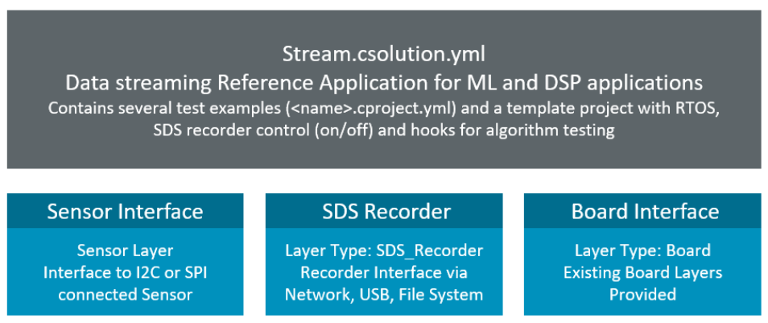

Examples
SDS examples applications are provided in a separate GitHub repository and shows the usage of the SDS-Framework.

The examples use csolution project layers to simplify targeting to different hardware boards.
The Sensor Layer implements a data streaming interface to is described in the section Overview. It is user code that is application specific.
The Layer Type: SDS_Recorder connects the data streams to the SDS files. There are various ready to use implementations available as outlined in the table below. Several layer implementations use the MDK-Middleware for communication.
| Layer Type: SDS_Recorder | Description |
|---|---|
SDS_Rec_Network.clayer.yml |
Connects via TCP/IP Network Ethernet to SDSIO Server. |
SDS_Rec_USB.clayer.yml |
Connects via USB Device VCom to SDSIO Server. |
SDS_Rec_FileSystem.clayer.yml |
Connects via FileSystem to a memory card. |
The Layer Type: Board is a standard board layer that provides a communication interface (CMSIS_ETH, CMSIS_USB_Device), a sensor interface (I2C, SPI), and a CMSIS_VIO interface for SDS recorder control. Other variants may have Audio or Video interfaces. Connections help to identify the compatible software layers.
The CMSIS-Toolbox section Reference Applications for more information about the project structure.